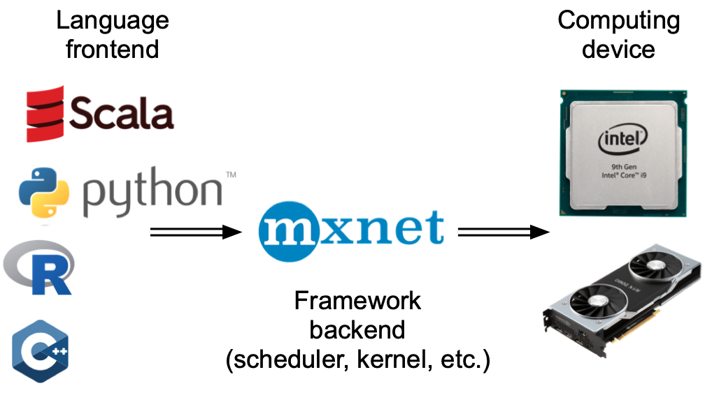
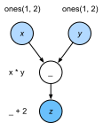
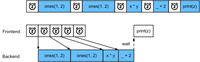

Tính Toán Bất Đồng Bộ¶
Máy tính ngày nay là các hệ thống song song cao, gồm nhiều lõi CPU (thường nhiều luồng trên mỗi lõi), nhiều phần tử xử lý trên mỗi GPU, và thường có nhiều GPU trên mỗi thiết bị. Tóm lại, chúng ta có thể xử lý nhiều thứ khác nhau cùng lúc, thường trên các thiết bị khác nhau. Đáng tiếc là Python không phải là một cách tuyệt vời để viết mã song song và bất đồng bộ, ít nhất là nếu không có thêm hỗ trợ. Sau cùng, Python là đơn luồng và điều này khó có khả năng thay đổi trong tương lai. Các framework deep learning như MXNet và TensorFlow áp dụng mô hình lập trình bất đồng bộ để cải thiện hiệu năng, trong khi PyTorch dùng bộ lập lịch riêng của Python, dẫn đến một đánh đổi hiệu năng khác. Với PyTorch, mặc định các thao tác GPU là bất đồng bộ. Khi bạn gọi một hàm dùng GPU, các thao tác được đưa vào hàng đợi của thiết bị cụ thể, nhưng không nhất thiết được thực thi ngay mà có thể sau đó. Điều này cho phép chúng ta thực thi nhiều tính toán song song hơn, bao gồm các thao tác trên CPU hoặc các GPU khác.
Do đó, hiểu cách lập trình bất đồng bộ hoạt động giúp chúng ta phát triển các chương trình hiệu quả hơn, bằng cách chủ động giảm yêu cầu tính toán và các phụ thuộc lẫn nhau. Điều này cho phép chúng ta giảm chi phí bộ nhớ và tăng mức sử dụng bộ xử lý.
#@tab mxnet
from d2l import mxnet as d2l
import numpy, os, subprocess
from mxnet import autograd, gluon, np, npx
from mxnet.gluon import nn
npx.set_np()
#@tab pytorch
from d2l import torch as d2l
import numpy, os, subprocess
import torch
from torch import nn
Bất Đồng Bộ Thông Qua Backend¶
Để khởi động, hãy xét bài toán đồ chơi sau: chúng ta muốn sinh một ma trận ngẫu nhiên và nhân nó. Hãy làm điều đó cả trong NumPy và tensor PyTorch để thấy sự khác biệt.
Lưu ý rằng tensor PyTorch được định nghĩa trên GPU.
#@tab mxnet
with d2l.Benchmark('numpy'):
for _ in range(10):
a = numpy.random.normal(size=(1000, 1000))
b = numpy.dot(a, a)
with d2l.Benchmark('mxnet.np'):
for _ in range(10):
a = np.random.normal(size=(1000, 1000))
b = np.dot(a, a)
#@tab pytorch
# Warmup for GPU computation
device = d2l.try_gpu()
a = torch.randn(size=(1000, 1000), device=device)
b = torch.mm(a, a)
with d2l.Benchmark('numpy'):
for _ in range(10):
a = numpy.random.normal(size=(1000, 1000))
b = numpy.dot(a, a)
with d2l.Benchmark('torch'):
for _ in range(10):
a = torch.randn(size=(1000, 1000), device=device)
b = torch.mm(a, a)
Kết quả benchmark qua PyTorch nhanh hơn nhiều bậc độ lớn. Tích vô hướng NumPy được thực thi trên bộ xử lý CPU, trong khi phép nhân ma trận PyTorch được thực thi trên GPU và do đó thao tác sau được kỳ vọng nhanh hơn nhiều. Nhưng chênh lệch thời gian rất lớn gợi ý rằng còn có điều gì khác đang diễn ra. Mặc định, các thao tác GPU là bất đồng bộ trong PyTorch. Buộc PyTorch hoàn tất toàn bộ tính toán trước khi trả về cho thấy điều đã xảy ra trước đó: tính toán đang được backend thực thi trong khi frontend trả quyền điều khiển về Python.
#@tab mxnet
with d2l.Benchmark():
for _ in range(10):
a = np.random.normal(size=(1000, 1000))
b = np.dot(a, a)
npx.waitall()
#@tab pytorch
with d2l.Benchmark():
for _ in range(10):
a = torch.randn(size=(1000, 1000), device=device)
b = torch.mm(a, a)
torch.cuda.synchronize(device)
Nói rộng ra, PyTorch có một frontend để tương tác trực tiếp với người dùng, ví dụ qua Python, cũng như một backend được hệ thống dùng để thực hiện tính toán. Như được minh họa trong fig_frontends, người dùng có thể viết chương trình PyTorch bằng nhiều ngôn ngữ frontend khác nhau, chẳng hạn Python và C++. Bất kể ngôn ngữ lập trình frontend được dùng là gì, việc thực thi chương trình PyTorch diễn ra chủ yếu trong backend của các cài đặt C++. Các thao tác do ngôn ngữ frontend phát ra được chuyển cho backend để thực thi. Backend quản lý các luồng riêng của nó, liên tục thu thập và thực thi các tác vụ trong hàng đợi. Lưu ý rằng để điều này hoạt động, backend phải có khả năng theo dõi các phụ thuộc giữa các bước khác nhau trong đồ thị tính toán. Do đó, không thể song song hóa các thao tác phụ thuộc lẫn nhau.

Hãy xem một ví dụ đồ chơi khác để hiểu đồ thị phụ thuộc rõ hơn một chút.
#@tab pytorch
x = torch.ones((1, 2), device=device)
y = torch.ones((1, 2), device=device)
z = x * y + 2
z

Đoạn mã ở trên cũng được minh họa trong fig_asyncgraph.
Bất cứ khi nào luồng frontend Python thực thi một trong ba câu lệnh đầu tiên, nó chỉ đơn giản trả tác vụ về hàng đợi backend. Khi kết quả của câu lệnh cuối cần được in, luồng frontend Python sẽ chờ luồng backend C++ hoàn tất việc tính kết quả của biến z. Một lợi ích của thiết kế này là luồng frontend Python không cần thực hiện các tính toán thực sự. Do đó, hiệu năng tổng thể của chương trình ít bị ảnh hưởng, bất kể hiệu năng của Python. fig_threading minh họa cách frontend và backend tương tác.

Rào Chắn và Tác Nhân Chặn¶
#@tab mxnet
with d2l.Benchmark('waitall'):
b = np.dot(a, a)
npx.waitall()
with d2l.Benchmark('wait_to_read'):
b = np.dot(a, a)
b.wait_to_read()
#@tab mxnet
with d2l.Benchmark('numpy conversion'):
b = np.dot(a, a)
b.asnumpy()
with d2l.Benchmark('scalar conversion'):
b = np.dot(a, a)
b.sum().item()
Cải Thiện Tính Toán¶
#@tab mxnet
with d2l.Benchmark('synchronous'):
for _ in range(10000):
y = x + 1
y.wait_to_read()
with d2l.Benchmark('asynchronous'):
for _ in range(10000):
y = x + 1
npx.waitall()
Tóm Tắt¶
- Các framework deep learning có thể tách frontend Python khỏi backend thực thi. Điều này cho phép chèn lệnh nhanh bất đồng bộ vào backend và tạo song song hóa liên quan.
- Bất đồng bộ dẫn đến một frontend khá phản hồi nhanh. Tuy nhiên, hãy cẩn thận không làm đầy quá mức hàng đợi tác vụ vì điều đó có thể dẫn đến tiêu thụ bộ nhớ quá mức. Nên đồng bộ hóa cho mỗi minibatch để giữ frontend và backend gần như đồng bộ.
- Các nhà cung cấp chip cung cấp các công cụ phân tích hiệu năng tinh vi để thu được hiểu biết chi tiết hơn nhiều về hiệu quả của deep learning.
Bài Tập¶
- Trên CPU, hãy benchmark cùng các thao tác nhân ma trận trong phần này. Bạn vẫn có thể quan sát tính bất đồng bộ qua backend không?